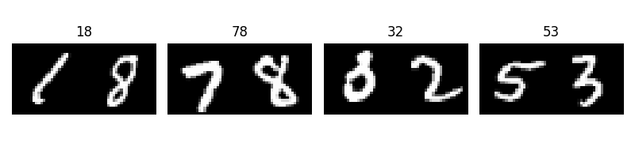

Homework 5: Two-Digit MNIST with a CNN
A 100-class image-classification experiment in PyTorch
00 through 99. You will design the CNN, train it reproducibly, and analyze both successes and failures.
hw5submission.pdf
Includes the corrected paired dataset, reproducible data loaders, model/training TODOs, setup checks, and dependency list.
Upload one PDF named hw5submission.pdf to Canvas. It must contain the required figures, metrics, discussion, and the complete runnable code used to produce them. The code may be included as an appendix.
Background: one image, one of 100 classes
A convolutional layer learns small spatial filters and applies them across the image. Pooling or strided operations reduce spatial size, later layers combine local patterns into higher-level features, and a final linear layer maps those features to class scores. Here the input is wider than ordinary MNIST because the two digits are concatenated into one \(28\times56\) image.
Treat the ordered pair as one multiclass target. The network therefore returns 100 raw logits, one for each class 00 through 99. CrossEntropyLoss combines log-softmax and negative log likelihood internally, so applying softmax in the model would be redundant and can make optimization less stable.
Dataset
Form each sample by placing two MNIST images side by side. If the left digit is \(a\) and the right digit is \(b\), the class index is \(10a+b\). Thus a visual 03 has class index 3, while 30 has class index 30; display predictions with two digits in figures.
Use the original MNIST training split only for training and the original test split only for final evaluation. Pair consecutive, non-overlapping images: (0,1), (2,3), and so on. This produces 30,000 training pairs and 5,000 test pairs and avoids the ambiguous overlapping-pair behavior in the archived handout.

The following starter is sufficient to create the paired dataset:
import torch
from torch.utils.data import Dataset
from torchvision.datasets import MNIST
class PairedMNIST(Dataset):
def __init__(self, root: str, train: bool, download: bool = True):
source = MNIST(root=root, train=train, download=download)
images = source.data.float().div(255.0)
labels = source.targets
left_images = images[0::2]
right_images = images[1::2]
self.images = torch.cat(
(left_images, right_images), dim=2
).unsqueeze(1)
self.labels = labels[0::2] * 10 + labels[1::2]
def __len__(self) -> int:
return len(self.labels)
def __getitem__(self, index: int):
return self.images[index], self.labels[index]Loader and sanity-check helpers
This code completes the data-loading portion of the starter and checks the most common shape and label mistakes before a long training run. It does not define the CNN or training loop.
import random
import torch
from torch.utils.data import DataLoader
def set_seed(seed: int) -> None:
random.seed(seed)
torch.manual_seed(seed)
if torch.cuda.is_available():
torch.cuda.manual_seed_all(seed)
torch.backends.cudnn.deterministic = True
torch.backends.cudnn.benchmark = False
set_seed(42)
train_data = PairedMNIST("data", train=True, download=True)
test_data = PairedMNIST("data", train=False, download=True)
train_loader = DataLoader(
train_data, batch_size=128, shuffle=True
)
test_loader = DataLoader(
test_data, batch_size=128, shuffle=False
)
images, labels = next(iter(train_loader))
assert images.ndim == 4
assert images.shape[1:] == (1, 28, 56)
assert labels.dtype == torch.int64
assert 0 <= labels.min().item() <= labels.max().item() <= 99
def two_digit_label(value: int) -> str:
return f"{value:02d}"The old handout paired data[i] with data[i + 1] while advancing i by one, so most source digits appeared in two samples. The web starter uses the non-overlapping slices 0::2 and 1::2; this produces 30,000 training pairs and 5,000 test pairs with an unambiguous construction.
Set and report random seeds for Python, NumPy if used, and PyTorch. Record the library versions, device, batch size, optimizer, learning rate, number of epochs, and any other training choices.
Required implementation
- Build a CNN that accepts batches with shape
(batch, 1, 28, 56). - Produce 100 output logits per image. Do not apply softmax before
torch.nn.CrossEntropyLoss. - Train only on the paired training set.
- Track mean training loss for every epoch using a clearly stated averaging convention.
- Evaluate the final model on the paired test set with gradient tracking disabled.
- Report both mean test loss and test accuracy.
You may choose the number of convolutional layers, channels, pooling operations, activation functions, optimizer, and other hyperparameters. Your report must make the architecture reproducible.
Required report contents
1. Method
- Describe the architecture layer by layer, including output shapes.
- State the loss function, optimizer, learning rate, batch size, and epochs.
- Explain how the two-digit labels are formed and how data leakage is prevented.
2. Learning curve
Plot mean training loss versus epoch. Label both axes and give the figure a descriptive title. If you track validation metrics, distinguish them clearly from the held-out test result.
3. Final evaluation
Report final test loss and accuracy. State the exact number of test pairs. Do not tune the model repeatedly against the test set.
4. Error analysis
Show at least four test images:
- at least two correctly classified pairs; and
- at least two incorrectly classified pairs.
Caption each image with the two-digit predicted label and the two-digit true label. In a short paragraph, identify a plausible visual pattern in the errors.
5. Code appendix
Include the complete code for data construction, model definition, training, evaluation, plotting, and example selection.
Pre-submission checks
- A batch has the expected shape and labels remain in the range 0-99.
- The left and right digits are not reversed when the label is formed.
- The output layer has exactly 100 logits.
- Test evaluation uses
model.eval()andtorch.no_grad(). - Loss is averaged consistently and all plots are readable in the PDF.
- Predictions such as class
3are displayed as03.